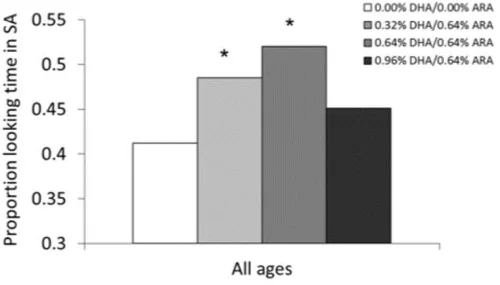

SUMMARY
The DHA Intake and Measurement of Neural Development (DIAMOND) trial represents one of only a few studies of the long-term dose-response effects of LCPUFA-supplemented formula feeding during infancy. The trial contrasted the effects of four formulations: 0.00% docosahexaenoic acid (DHA)/0.00% arachidonic acid (ARA), 0.32% DHA/0.64% ARA, 0.64% DHA/0.64% ARA, and 0.96% DHA/0.64% ARA against a control condition (0.00% DHA/0.00% ARA). The results of this trial have been published elsewhere, and show improved cognitive outcomes for infants fed supplemented formulas, but a common finding among many of the outcomes show a reduction of benefit for the highest DHA dose (i.e., 0.96% DHA/0.64% ARA, that is, a DHA: ARA ratio 1.5:1.0). The current paper gathers and summarizes the evidence for the reduction of benefit at this dose, and in an attempt to account for this reduced benefit, presents for the first time data from infants' red blood cell (RBC) assays taken at 4 and 12 months of age. ARA levels showed a strong inverted-U function in response to increased DHA supplementation; indeed, infants assigned to the formula with the highest dose of DHA (and highest DHA/ARA ratio) showed a reduction in blood ARA relative to more intermediate DHA doses. This finding raises the possibility that reduced ARA may be responsible for the reduction in benefit on cognitive outcomes seen at this dose. The findings implicate the DHA/ARA balance as an important variable in the contribution of LCPUFAs to cognitive and behavioral development in infancy.
INTRODUCTION
The goal of this paper is to discuss the potential role of the balance between DHA and arachidonic acid (ARA) in light of the results of cognitive outcomes from a long-term follow-up of a randomized clinical trial that provided 0.64% of total fatty acids as ARA in combination with a varied concentration of DHA (0.32, 0.64 or 0.96% of total fatty acids) throughout the first year of life in infants born at term. When expressed in terms of the DHA: ARA ratio, the supplemented conditions reflect ratios of 0.5:1 (0.32% DHA/0.64% ARA), 1:1 (0.64% DHA/0.64% ARA), and 1.5:1 (0.96% DHA/0.64% ARA). Thus, the highest dose provided a ratio favoring DHA beyond that which has been typically provided in formula [5], although DHA: ARA ratios of 2:1 have been documented in breast milk [6].
THE DIAMOND TRIAL
The DHA Intake and Measurement of Neural Development (DIAMOND) trial [8] is the only dose response trial of DHA and development reported to date. The DIAMOND study was conducted at two sites in the US. (Dallas, TX and Kansas City, KS) The primary outcome of the study was visual acuity at 12 months of age. The amount of ARA in human milk typically exceeds that of DHA. The choice of ARA concentration in the DIAMOND trial was based on a median concentration of ARA in milk samples from around the world. The different concentrations of DHA reflected the range found in human milk except that the lowest concentration reflected the median milk DHA worldwide, a concentration shown previously to enhance visual acuity of term infants [9]. It is well known that the DHA content of human milk is highly dependent upon the DHA intake of the mother. Consequently, the long term effects of supplementation on cognition and brain structure/function must be attributed to DHA and ARA. The initial trial into which infants were enrolled is described in detail elsewhere [8]. Briefly, 343 term infants who weighed between 2490 and 4200 g at birth were enrolled and randomly assigned to one of the 4 formulas described above between September 2002 and September 2004. The formulas provided either 0, 17, 34 or 51 mg DHA/ 100 kcal. The three formulas that contained DHA provided 34 mg ARA/ 100 kcal. Parents were asked to feed formula exclusively for at least 4 months and were provided their infant's assigned formula as needed throughout the first 12 months. A total of 244 children completed the study to 12 months [8]. Of these, 81 were enrolled for long term cognitive assessment at the Kansas City site [10] and 131 children at the Dallas site [11]. RBC phospholipid DHA and ARA (g/100 g total fatty acid) were determined at 4 and 12 months of age. Here, we report primarily on the Kansas City cohort, as the major follow-up studies were run and published with those participants.
RESULTS
Non-linear supplementation dose-beneft relationship Infancy outcomes
Significant effects of supplementation were seen for most measures taken in infancy. Supplemented groups were observed to have better visual acuity [12] through 12 months (combined Kansas City and Dallas cohorts), and lower heart rates [13] during the visual habituation task at 4, 6, and 9 months. However, the first indication of a reduced benefit in the highest DHA dose group (0.96 DHA/0.64% ARA; DHA: ARA = 1.5:1) was observed on sustained attention [13], a measure of the degree to which visual attention was coupled with active information processing [14]. Here, significantly improved attention relative to controls was seen in only the two middle doses. The highest dose was not different from controls, but neither was it different from the other supplemented groups (see Fig. 1). An important point here, relevant to the other findings reported later in the paper, is that this pattern reflects a reduced benefit (rather than increased risk or actual harm) at the highest dose; that dose did not incur performance that was worse than controls, it merely reflected performance that was less than that seen for the intermediate levels of DHA supplementation.

DISCUSSION
These results suggest that the DHA/ARA balance may be an important factor in the efficacy of DHA and ARA on cognitive and developmental outcomes in infancy and early childhood. The DIAMOND results showed significant, meaningful, and long-lasting effects of feeding DHA and ARA-supplemented formula to infants from birth to 12 months of age. However, we found that increasing DHA while holding ARA constant (which increases the DHA: ARA ratio) resulted in a reduction of ARA in the RBC phospholipids of human infants at the highest DIAMOND DHA dose. We show here that a ratio of DHA to ARA of 1.5:1 reduces red blood cell membrane ARA during brain development compared to a 1:2 or 1:1 ratio. Our studies of neurodevelopment in infants fed these same formulas suggest the balance of DHA to ARA in formula may be a factor in realization of benefits of LCPUFA supplementation in infancy and early childhood. The neurodevelopmental outcomes favor a 1:1 or 1:2 balance of DHA to ARA consistent with the conclusions from a recent review [16].
REFERENCES
5. Lapillonne A, Groh-Wargo S, Lozano Gonzalez CH, Uauy R. Lipid needs of preterm infants: updated recommendations. J Pediatr. 2013;162:S37–S47. [PubMed] [Google Scholar]
6. Delplanque B, Gibson R, Koletzko B, Lapillonne A, Strandvik B. Lipid quality in infant nutrition: current knowledge and future opportunities. J Pediatr Gastroenterol Nutr. 2015;61:8–17. [PMC free article] [PubMed] [Google Scholar]
7. Birch EE, Carlson SE, Hoffman DR, Fitzgerald-Gustafson KM, Fu VL, Drover JR, Castaneda YS, Minns L, Wheaton DK, Mundy D, Marunycz J, Diersen-Schade DA. The DIAMOND (DHA intake and measurement of neural development) study: a double-masked, randomized controlled clinical trial of the maturation of infant visual acuity as a function of the dietary level of docosahexaenoic acid. Am J Clin Nutr. 2010;91:848–859. [PubMed] [Google Scholar]
8. Colombo J, Carlson SE, Cheatham CL, Shaddy DJ, Kerling EH, Thodosoff JM, Gustafson KM, Brez C. Long-term effects of feeding DHA and ARA-supplemented childhood cognitive outcomes. Am J Clin Nutr. 2013;98:403–412. [PMC free article] [PubMed] [Google Scholar]
9. Drover JR, Hoffman DR, Castaneda YS, Morale SE, Garfield S, Wheaton DH, Birch EE. Cognitive function in 18-month-old term infants of the DIAMOND study: a randomized, controlled clinical trial with multiple dietary levels of do-cosahexaenoic acid. Early Human Dev. 2011;87:223–230. [PubMed] [Google Scholar]
10. Birch EE, Carlson SE, Hoffman DR, Fitzgerald-Gustafson KM, Fu VL, Drover JR, Castaneda YS, Minns L, Wheaton DK, Mundy D, Marunycz J, Diersen-Schade DA. The DIAMOND (DHA intake and measurement of neural development) study: a double-masked, randomized controlled clinical trial of the maturation of infant visual acuity as a function of the dietary level of docosahexaenoic acid. Am J Clin Nutr. 2010;91:848–859. [PubMed] [Google Scholar]
11. Colombo J, Carlson SE, Cheatham CL, Fitzgerald-Gustafson KM, Kepler A, Doty T. Long-chain polyunsaturated fatty acid supplementation in infancy reduces heart rate and positively affects distribution of attention. Pediatr Res. 2011;70:406–410. [PMC free article] [PubMed] [Google Scholar]
12. Richards JE. The development of sustained visual-attention in infants from 14 to 26 weeks of age. Psychophysiology. 1985;22:409–416. [PubMed] [Google Scholar]
13. Hadley K, Ryan A, Forsyth S, Gautier S, Salem N. The essentiality of arachidonic acid in infant development. Nutrients. 2016;8:216. [PMC free article] [PubMed] [Google Scholar]